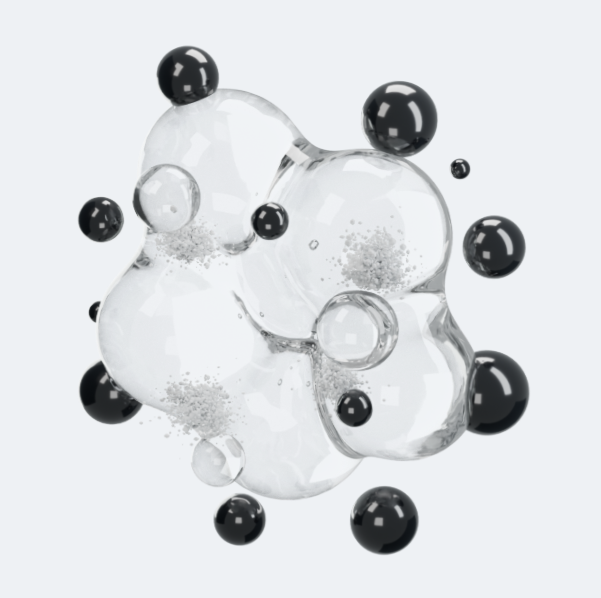

Один объём
Выпуклости соединены плавными переходами. Три малые прозрачные капли и семь чёрных сфер движутся рядом с основной массой. Крупная прозрачная капля медленно дрейфует спереди, перекрывая смолу.
Сначала форма и свет. Затем — медленное перетекание поверхности и независимое движение включений.
Сферы плавно проходят перед смолой и за ней, не касаясь её поверхности. Движение можно остановить кнопкой «Пауза».
Сравнить с исходным рендеромРакурс зафиксирован.
Движутся материал и включения, не камера.

Это статичное изображение Blender — оно не используется вместо 3D-модели вверху. В новом варианте взята сохранённая геометрия той же слитной массы.
Сравниваем плавность переходов, характер бликов, видимую толщину и мелкость порошка. Совпадение с офлайн-рендером пока не заявляем.
Выпуклости соединены плавными переходами. Три малые прозрачные капли и семь чёрных сфер движутся рядом с основной массой. Крупная прозрачная капля медленно дрейфует спереди, перекрывая смолу.
Фон участвует в расчёте прозрачного материала. Студийные отражения и преломление передней капли подчёркивают глубину без молочной заливки. Преломление использует переднюю и заднюю поверхности; отражение двух границ объёма учитывается приближённо.
Лопасти плавно вытягиваются и меняют изгиб, перераспределяя объём без равномерного раздувания. Малые сферы медленнее проходят перед смолой и за ней на разных высотах. Порошок состоит из 3000 зёрен в бережном режиме и 4600 в подробном; движение рассчитывается на видеокарте.